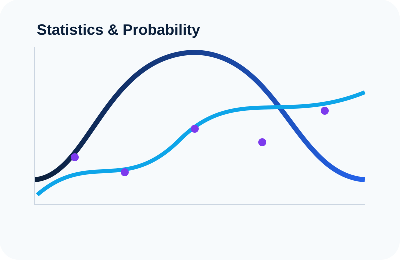
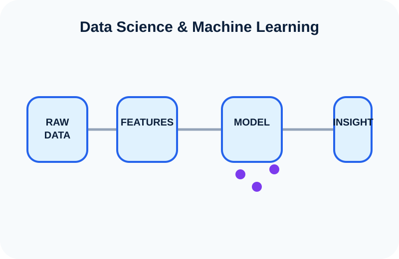

Statistics & Probability
Incertidumbre, inferencia, distribuciones, Survival Analysis y los fundamentos matemáticos detrás de las decisiones basadas en datos.
Estudio y exploro Data Science, Statistics, Machine Learning, Deep Learning y Artificial Intelligence, y comparto lo que aprendo mediante explicaciones visuales, proyectos prácticos y guías paso a paso.

Me enfoco en los conceptos detrás de los modelos: no solamente en cómo ejecutar código, sino también en por qué funcionan los métodos, qué supuestos utilizan y cómo interpretar correctamente sus resultados.

Incertidumbre, inferencia, distribuciones, Survival Analysis y los fundamentos matemáticos detrás de las decisiones basadas en datos.

Desde datos sin procesar y Exploratory Data Analysis hasta modelos predictivos, evaluación de modelos y aplicaciones prácticas.

Neural Networks, Deep Learning, Generative AI, agentes inteligentes y las ideas detrás de los sistemas modernos de Artificial Intelligence.

Uso de Singular Value Decomposition (SVD) y reconstrucción de bajo rango para recuperar estructura oculta en imágenes de dígitos manuscritos contaminadas con ruido.

Proyecto de clasificación end-to-end que explora qué clientes tienen mayor probabilidad de abandonar el banco y qué variables contribuyen al churn.

Aplicación de Data Science y modelos predictivos para comprender patrones asociados con el riesgo de crédito hipotecario.
Ver proyecto →
Una exploración visual y práctica del análisis de tiempo hasta un evento, incluyendo Survival Functions, Hazard Functions, censoring y Kaplan–Meier estimation.
En desarrolloLos materiales de aprendizaje combinan explicaciones visuales, matemáticas, código y ejemplos prácticos.
Censoring, Survival Functions, Hazard Functions y Kaplan–Meier estimation desde los fundamentos.
Cómo la descomposición de matrices permite revelar estructuras ocultas y reducir ruido en imágenes.
Comprendiendo los objetos matemáticos que se encuentran detrás de las redes neuronales modernas.
Una colección en crecimiento de explicaciones concisas sobre los conceptos que impulsan Statistics, Data Science y Artificial Intelligence.
Por qué la información incompleta sobre tiempo hasta un evento todavía contiene evidencia estadística útil.
Una explicación de cómo las matrices pueden descomponerse en estructuras más simples.
Una intuición visual para comprender cómo podemos representar significado mediante geometría.
Roles de planner, analyst y executor dentro de sistemas multi-agent.
Mi trayectoria académica combina Economía, Data Science y Artificial Intelligence. Utilizo este sitio para documentar lo que aprendo y transformar ideas complejas en explicaciones claras, ejemplos visuales y proyectos prácticos.
Más sobre mí